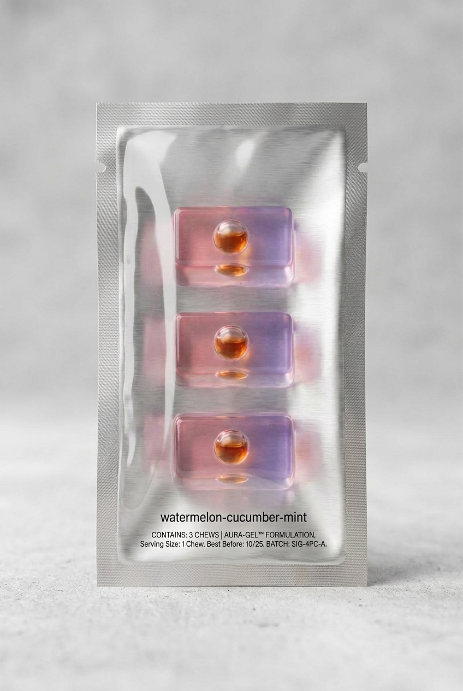
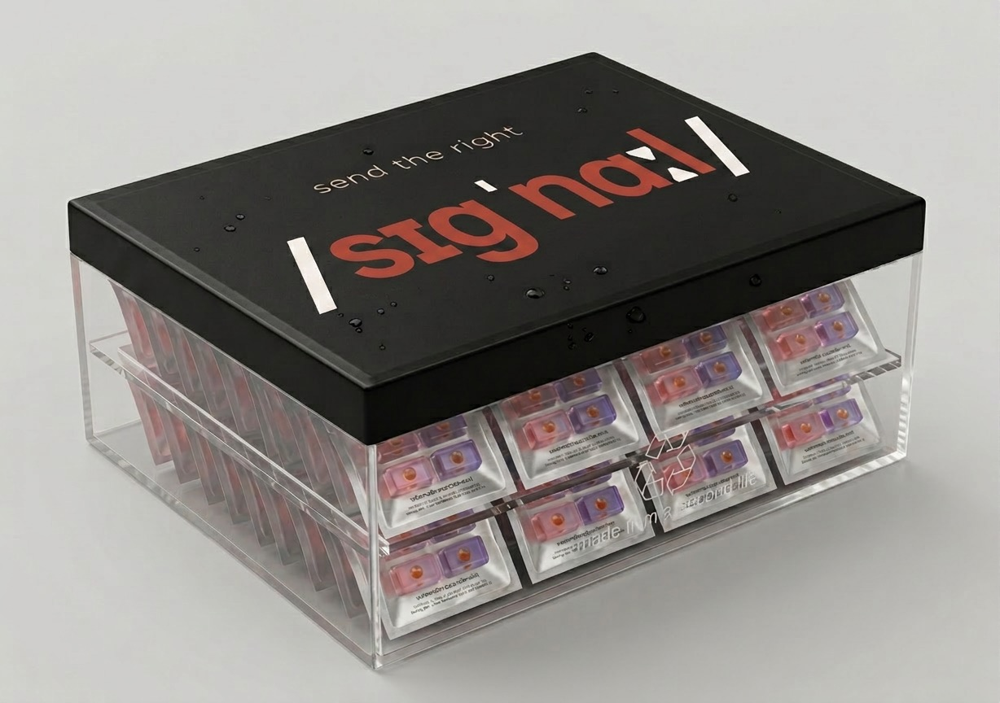
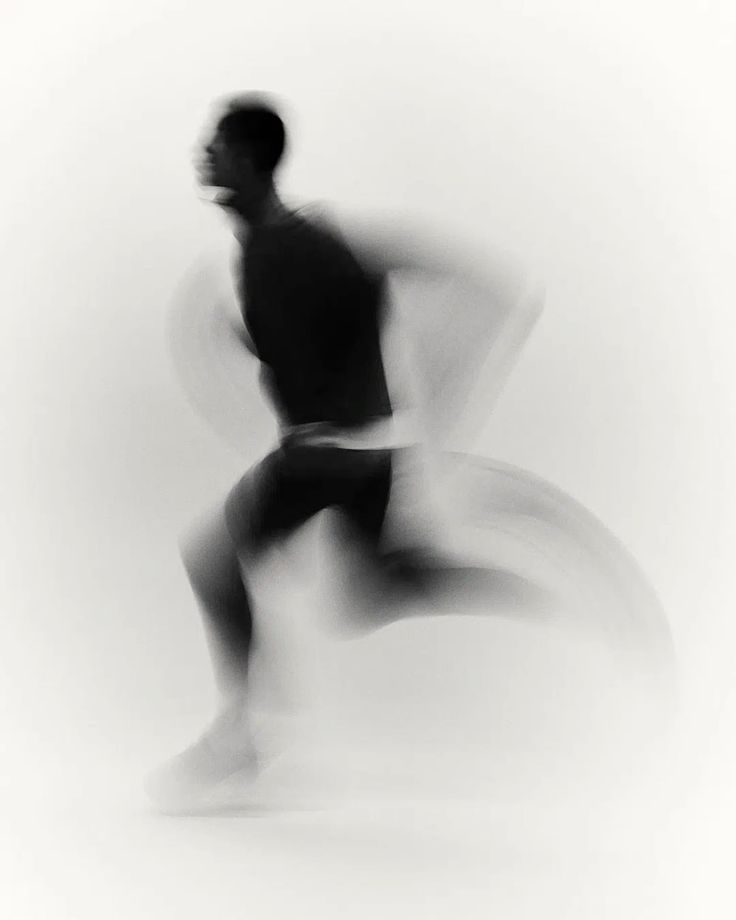
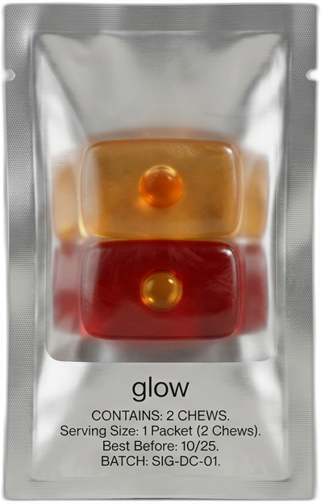

send the right
/sɪɡˈnɑːl/
/sɪɡˈnɑːl/
the signal your cells are waiting for.
investor memo · v1 · april 2026
~ 10 minute read · async
In April 2026, Unilever acquired Grüns — a daily-gummy greens brand, four years old, packet-in-container format, subscription-DTC — for $1.2 billion. Unilever had spent the previous year divesting its food division to re-focus roughly two-thirds of revenue on beauty and personal care. The Grüns deal wasn't a food acquisition. It was the first beauty-coded ingestible acquisition at scale, and it set the comp.
Two strategic signals landed at once:
(1) The format is validated. A dissolvable daily serving + single-serve packet + container-as-ritual, priced at a premium and sold on habit — that architecture is now worth $1.2B when executed against a habit metric (Grüns: 80% daily-use, 85K verified reviews).
(2) The category is wide open. Grüns won the greens lane. Liquid IV won hydration. Vital Proteins won collagen. No one has won the beauty-from-within lane with a format-led brand. That lane is $8B+, growing 12% annually, and its largest incumbent (collagen powder) is a declining behavior — the buyer is looking for the next format.
$1.2B in 4 years. Greens + daily packet format. Habit-metric company: 80% daily-use, 85K verified reviews. Unilever paid for the behavior, not the blend.
Unilever divested food in 2025. Beauty & personal care now targets ~2/3 of forward revenue. Beauty-from-within sits at the intersection of their two strongest growth bets: premium beauty + ingestibles.
$8B+, growing 12%. No format-led winner. Collagen powder is declining. Already-stacking consumers span gen z to aging-well — a cross-generational buyer base consolidating around a "what actually works and what do I stick with" question. The biggest unclaimed adjacency to the category Unilever just bought into.
signal is the beauty-from-within answer to what grüns proved in greens — and we're the first ones here.
The target buyer is defined behaviorally, not demographically: someone already stacking supplements. Age span ranges from gen z students through aging-well adults — a cross-generational buyer base. Collagen in the coffee. An electrolyte stick. A beauty gummy. A greens multi. Four to five products a day, $7.50–$9.80 on the shelf. They are never sure what any of it is doing. They keep buying because they haven't found the thing that works. They keep switching because nothing feels like a category answer.
Collagen, HA, B-vitamins, electrolytes, probiotics. Raw materials everywhere. The ingredients aren't the problem — she's already invested in them.
Without the energy to use what she's giving them, her cells are running on substrate alone. She's feeding a machine that can't fully run. Every supplement she takes asks her cells to do work they don't have the ATP for.
A clinical-dose chew that protects the mitochondrial membrane (where ATP is made) and supplies the substrates her cells need to do the visible work. One chew. 90 seconds. Every day.
The strategic consequence: signal is additive to her existing stack, not a replacement. She doesn't have to drop her collagen to add us — signal supports the cells her collagen is asking to do the work. That's the cleanest possible acquisition message in a category where every new brand is pitched as "better than the one you have."
“a living cell requires energy not only for all its functions, but also for the maintenance of its structure. without energy life would be extinguished instantaneously, and the cellular fabric would collapse.”
— Albert Szent-Györgyi · Nobel Lecture, December 11, 1937
signal's launch SKU is a dissolvable chew with a clinical-dose formulation built on two parallel layers: (1) a mitochondrial-protection keystone present in every SKU we will ever ship, and (2) the cell-type-specific substrates that produce the visible outcome. The two layers run in parallel — astaxanthin protects mitochondrial membranes (a benefit shared by every cell that makes ATP); the substrates do their own cell-type-specific work. In the launch SKU, that visible outcome is skin hydration and structure.
One of the most-studied protectors of mitochondrial membranes. Crosses the blood-brain barrier and blood-retinal barrier. Concentrates in the lipid bilayers where ATP is produced. The single ingredient most directly tied to the cellular energy thesis — and it appears at the same 4mg dose in every future SKU. That uniformity is the platform claim.
Source: AstaZine® — a registered ingredient brand from Algae Health Sciences (BGG World). Ecocert® organic-certified (first in category), closed-photobioreactor production, supercritical CO2 extraction, 97% purity. Two FDA No-Objection NDIs (12 mg, 24 mg) + two EU Novel Foods approvals + self-affirmed GRAS. Registered for sale in most major regulated markets globally. Direct founder relationship with BGG.
The raw material her skin cells use to build the dermal water reservoir. Sourced as Hyabest®(S)LF-P from Kewpie Corporation (Japan) — a registered ingredient brand, low-MW (200k–500k Da), bio-fermentation derived, GMO-free. Canada NNHPD registered + US FSMA compatible + Japan Foods with Function Claims. The exact branded ingredient and dose used in the human RCTs (Oe 2017; Grier-Welch et al. 2025 / Ritual HyaCera) that establish oral HA improves skin hydration.
The raw material for the skin's barrier lipids. Sourced as Ceratiq® from PLT Health Solutions / Robertet (France) — a registered ingredient brand. Non-GMO French wheat, gluten-free tested per batch, FDA NDI with authorized skin-hydration claim, 2018 Nutraingredients-USA Ingredient of the Year. Same 350 mg dose and same branded ingredient used in Ritual HyaCera's 12-week RCT (Grier-Welch et al., 2025) — plus our mitochondrial keystone HyaCera doesn't carry.
Vitamin E protects mitochondrial lipids from oxidation. Vitamin C is a cofactor for ATP-adjacent enzymatic reactions. Zinc and selenium support antioxidant defense of the energy production machinery. Inexpensive ingredients; non-negotiable architecture.
Claim discipline. signal does not claim to "treat mitochondrial dysfunction" or "reverse cellular aging." Efficacy closes via ingredient-level RCT pedigree (every branded substrate and keystone carries its own peer-reviewed evidence at the dose we use) + real-world retention metrics (the Grüns playbook). Every claim has its receipt in the full concept deck appendices.
Beauty-from-within is a retention business. The category loses 60–70% of buyers by day 60 — pills endured, powders choked, gummies regressed to candy. Grüns won on 80% daily-use. That's the metric Unilever paid $1.2B for, and it's the single number we optimize for. Four things, working together, make the daily act something she repeats.
Tear, chew, taste, dissolve. Shorter than brushing your teeth. Long enough to feel like its own moment.
Chew matrix carries water-soluble actives (HA, vitamins). MCT liquid center carries fat-soluble actives (astaxanthin, CoQ10). One format, no pill-and-powder stack.
Hard shell, progressive dissolve, liquid-center flavor burst at ten seconds. 2.7 × 1.5 × 1 cm per chew (L × W × H). Designed around the act of eating it, not around getting it down.
Pleasure delivers consistency. Consistency delivers outcomes. That inversion is the whole mechanism — not a slogan.
The milestone gate (M5–M8): 70%+ daily-use rate by month 3 of beta. If the chew isn't trending toward that number, the format or ritual is failing and gets reworked before scale spend. This is the one metric that decides whether signal becomes a category brand or a pretty SKU.
Nothing like this exists in the longevity-adjacent beauty category today. A dissolvable chew with a liquid-center flavor burst, tear-open packet with clear PET window, 60-packet container — a supplement that reads as a product, not a regimen. Format is the entry point, not the durable moat — we expect format imitation within 18-24 months and have built the architecture to compound past it (see slide 09).


3 chews per packet. 1 packet = 1 serving = 1 full clinical dose. Laser-scored V-notch for clean tear. The clear PET back reveals the chews before you open it — the ritual starts at the packet. The packet is the dose.

Xylitol shell, progressive dissolve, liquid-center flavor burst at ~10 seconds. The taste moment is the sensory receipt — something is happening, every time she chews.

Deep Evening primary box. Recyclable paperboard, foil-stamped wordmark. Premium unboxing, no plastic clamshell. Ships every two months.
Grüns proved the packet-in-container architecture is worth $1.2B. signal applies the same daily-packet ritual to a different category — longevity-adjacent beauty — with a format the category has never seen before.
signal's defensibility is a stack of nine layers. One of them is a thesis no other beauty-from-within brand has claimed: cellular energy as the platform foundation. By the time competitors react, signal has exclusive partnerships, narrative ownership, and a multi-SKU architecture they can't retroactively unify.
Format alone is not the durable moat. The combination is — format + 16 branded ingredients across three keystone axes + supplier relationships + habit metrics + brand voice. We expect format imitation within 18–24 months and have built the architecture to compound past it. Olly, Lemme, and a future Unilever house brand are all capable of importing a Hi-Chew style chew. None of them can retroactively claim the cellular-communication thesis under their name, replicate three independent keystone-supplier relationships at the same economics, or build a habit-metric brand from a standing start in the same window.
| # | Layer | Time to replicate |
|---|---|---|
| 01 | Format — dissolvable chew + liquid-center burst + single-serve packet | 12–18 months |
| 02 | Energy thesis — cellular energy as platform foundation. No other beauty-from-within brand has claimed this. | Uncopyable in narrative |
| 03 | Formulation architecture — every SKU carries a machinery-protection keystone chosen for the tissue. AstaZine® astaxanthin (glow/surge/guard); Kaneka QH® Ubiquinol (rise/edge/move); MitoPrime™ Ergothioneine (rest/still). Best-fit per biology. | Three supplier-relationship axes + architecture-as-narrative |
| 04 | Sensory ritual — 90-second multi-sensory experience with felt-feedback receipt | Impossible without format change |
| 05 | Co-founder + APAC-intro source — Vanness Wu on the cap table (non-capital co-founder 2026-04-18 PM) with Asia audience reach + APAC-intro network. Not the face of the brand; the Ryan Reynolds / Aviation Gin model. | Uncopyable |
| 06 | First-mover partnerships — longevity-adjacent (Mitopure, Novos, Ritual) + electrolyte-adjacent (LMNT, Hydrant) co-marketing | Contractually locked 12–24 months |
| 07 | Platform architecture — 8 SKUs, 8 cell types, ONE biological foundation | 12–24 months — can't be retroactively unified |
| 08 | Asia distribution — cross-border e-commerce via Vanness's network + Frank's GNC Taiwan category expertise | Uncopyable |
| 09 | Supplier-relationship moat — three independent keystone-supplier axes. AstaZine® astaxanthin (BGG World / Algae Health Sciences, direct founder relationship, Ecocert® organic, 97% purity, two FDA NDIs, two EU Novel Foods approvals, GRAS) for glow/surge/guard. Kaneka QH® Ubiquinol (Kaneka, Japan, first-to-market 2006, US GRAS) for rise/edge/move. MitoPrime™ Ergothioneine (Nutrition 21, US GRAS, EU Novel Foods) for rest/still. A competitor retrofitting a keystone layer would need to replicate three supplier relationships, not one. | Relationship-locked — Uncopyable on the same terms |
Ritual's HyaCera ran a 12-week placebo-controlled RCT published in Dermatology and Therapy (Oct 2025) at the same 120 mg low-MW HA dose + same 350 mg Ceratiq® dose used in signal (glow). Their peer-reviewed paper is independent validation for our substrate layer. signal's efficacy gate closes via ingredient-level RCT pedigree (14+ branded ingredients across the platform, each with its own peer-reviewed evidence) + real-world retention metrics — the Grüns playbook. We're not racing to prove substrates. Someone else already did that work for us.
Ingestible-brand acquisitions in the last 36 months establish a clear playbook. Strategic buyers pay for habit-metric brands in premium categories with format differentiation and platform potential. signal sits in the next open adjacency — beauty-from-within — with a format Unilever has already validated in greens.
Positioning matters at exit. Longevity-adjacent brands trade at higher multiples than beauty-only brands. signal's cellular energy thesis is not just differentiation — it's multiple expansion.
signal sits at the overlap of three already-massive markets, claiming a category position none of them currently occupies: cellular-energy-led beauty-from-within.
Growing 12% annually. Already-stacking consumers span gen z to aging-well — cross-generational demand consolidating around what actually works. HUM, Lemme, Ritual, Vital Proteins. None has claimed energy as the foundation.
NAD+ precursors, urolithin A, CoQ10, NMN, NR. Comp set: Novos, Tru Niagen, Timeline, Pendulum. Mostly capsule, mostly biohacker-coded. No female-targeted brand owns this lane.
Botox, filler, microneedling, lasers. Patients spending $500–$2000 per visit, asking "what do I take to protect the investment?" signal is the natural ingestible companion.
Cellular energy is the trade-press wave of 2026. NutraIngredients, BeautyMatter, Vogue Scandinavia, and Glossy have all run "cellular health" or "inside-out beauty" framings in the last six months. The phrase is dominant in 2026 trade press but no consumer brand has claimed it yet. That won't last.
Same substrate, capsule format, no mitochondrial keystone. First clinical shot fired.
Gummy-meets-ingestible. Adjacent category energy accelerating.
The comp is now public. Every category investor is looking at the next adjacency.
signal has a 6–9 month window to plant the flag at the convergence point of three markets before a better-resourced competitor claims cellular energy as platform positioning. The bootstrap-first timeline is built around that window — M0 bootstrap launch (glow), M3–M4 CMO, M3 habit-metric checkpoint, M5–M6 retail conversations, M10–M12 full 8-SKU platform via F&F round. Every month past Q4 2026 compresses the window further.
signal launches as one SKU — glow — and scales into a platform of eight. Every SKU carries a machinery-protection keystone chosen for the specific biology — AstaZine® astaxanthin (glow, surge, guard), Kaneka QH® Ubiquinol (rise, edge, move), MitoPrime™ Ergothioneine (rest, still) — and layers branded cell-type-specific substrates on top. That architecture is what makes signal a category brand instead of a line extension story.



signal (glow). One launch SKU expressing the energy thesis through skin — the most visible cell type and the biggest addressable market. The wedge gets us noticed and converts the beauty buyer.
Seven additional SKUs, each a different expression of the same biology in a different tissue. The platform unifies under one thesis no competitor can retroactively claim — and this is what makes the brand strategic-acquirer-legible.
Direct-to-consumer subscription, one container every two months. Three COGS tiers across the 8-SKU platform — reflecting the real cost delta between glow (HA + phytoceramides) and surge (3 g Creapure + 400 mg PeakATP) or rise (Niagen NR licensing premium). Same 30% Founder's discount + 15% Subscriber discount apply across every tier. Send a Signal mechanic permanent.
| Tier | SKUs | Founder (30% off) | Subscriber (15% off) | One-time |
|---|---|---|---|---|
| A · standard | glow, rest, guard, still | $49 | $59 | $69 |
| B · mid-premium | edge, move | $55 | $67 | $79 |
| C · premium | rise, surge | $62 | $76 | $89 |
Pricing directional pending Zone Halo COGS quotes and supplier-contract negotiations. Founder's Price locks for life per SKU at first-500 claim.
| Variant | Price | Net unit contribution | Notes |
|---|---|---|---|
| Non-subscriber (launch classic) | $5 / send | ~−$0.55 | Pay $5, two packets ship (friend + sender). Absorbed as CAC substitute. |
| Subscriber (permanent) | $5 / send | ~+$2.00 | Subscriber pays $5, one packet ships to new recipient. Permanent feature, not a campaign. |
At scale, after CMO pricing normalizes from MOQ rates.
At 6-month retention. Rises to $240+ at 12-month.
Via Send a Signal vs. $25–$50 paid social CAC for comp brands.
By month 3 of beta. Grüns won on 80%. This is the one metric that decides exit multiple.
Month-12 target is a run-rate of approximately $150K MRR — a base case grounded in a 3,500-subscriber active base plus layered non-subscription revenue. Each component is an input the M5 habit metric and CMO COGS data will either confirm or correct before we commit to scale spend. Showing the work:
~3,500 active subscribers at blended ~$62 / 2-month ship cycle (Tier-A-weighted with tier mix) = ~$31 / effective month / subscriber × 3,500 = ~$108K / month.
~450 / month at blended ~$72 one-time (tier mix across SKUs) = ~$32K / month.
Subscriber tier, 1 send / month cap. If ~60% of active subs send: 2,100 sends × $5 = ~$11K / month.
Sum: $103K + $31K + $11K = ~$145K / month → $150K MRR run-rate.
Assumptions that move the target: if subscriber retention tracks closer to the Grüns benchmark (80% annual) instead of our base 70%, 12-month subscriber base is closer to 4,500 and run-rate is closer to ~$195K MRR. If the habit metric underperforms (retention in 50–60% range), subscriber base lands near 2,500 and run-rate drops to ~$115K MRR. Every assumption compounds, which is why the M5–M8 habit-metric milestone is load-bearing, not nice-to-have.
Numbers are directional estimates pending Zone Halo formulation outputs, 3PL shipping quotes, and M5 habit-metric data. The Efficacy gate closes via ingredient-level RCT pedigree + M5–M8 habit/retention metrics (the Grüns playbook), not a company-funded pilot.
Concept origination, brand architecture, formulation direction, fundraising lead. Wellness/health entrepreneurship background. Owns the thesis end-to-end.
Operations, manufacturing relationships, supply chain, day-to-day execution. The ops counterweight to the brand/strategy lead.
Asian celebrity audience reach (Taiwan, China, broader APAC). Non-capital co-founder + APAC-intro source + brand amplifier (updated 2026-04-18 PM — SAFE pursuit cancelled; co-founder role preserved without capital layer). Anchor for the cross-border distribution story. Participation formalized via revised Founders' MOU pending legal engagement.
Runs GNC Taiwan full-time. Supplement-industry category expertise + retail/distribution access in the same APAC market signal targets for cross-border launch. Frank and Vanness are the two halves of the Asia arc.
Pre-launch, but not empty. The concept has moved from thesis to an architected pre-production program; the bootstrap closes the gap to CMO + glow launch, and the F&F round (conditional on retention) funds the 8-SKU platform expansion.
Every pre-launch concept has risk. Listing them here rather than waiting for the question is part of how we run diligence. These are the four we think are load-bearing, with the specific mitigations already in the plan.
| # | Risk | How it manifests | Mitigation already in plan |
|---|---|---|---|
| 01 | Habit-metric failure. The chew doesn't reach 70%+ daily-use in beta. | Retention curves look like the category average (60–70% drop by day 60). Investor thesis collapses. | M5–M8 is explicitly a milestone gate. If habit metric isn't trending toward 70% by M3 of beta, we rework format or ritual before scale spend. Send a Signal beta is the real-world test; we don't need to guess. |
| 02 | Keystone stability failure. One of three keystones oxidizes or degrades in the chew matrix during shelf life. | Moat Defense layer 03 (per-tissue keystone architecture) is compromised for the affected SKUs. | Risk distributed across three keystones (AstaZine®, Kaneka QH® Ubiquinol, MitoPrime™ Ergothioneine) rather than concentrated in one. Zone Halo formulation engagement ($10K/SKU) explicitly includes stability protocol design; accelerated-stability testing is a first-sprint deliverable. If one keystone fails for a specific SKU, we can swap that keystone without breaking platform architecture. |
| 03 | Formulation timing slippage. Zone Halo 8-SKU formulation cycle runs long (12+ months). | Launch pushes into 2027. Competitive window tightens. Runway stress. | Zone Halo is a direct-relationship formulator (Sean Wells) with agreed $10K/SKU pricing. Parallel-track SKUs instead of sequential. Founder runway covers 6–12 months with cushion. Simplified prototype first, full active stack second — de-risks format before full formulation. |
| 04 | Claim-discipline drift. Marketing or press implies "treats mitochondrial dysfunction" or "reverses aging." | FDA warning letter. Pharmaceutical claim exposure. Brand-trust damage. | Claim discipline is baked into the verbal brand brief. Every dose is the dose that was studied. Efficacy closes via ingredient-level RCT pedigree + retention metrics, not disease-endpoint claims. Disclaimer in the deck is explicit. Pre-launch review by regulatory counsel is a budgeted line item. |
Ritual is an adjacent threat, not an existential one. Their HyaCera capsule uses the same 120 mg HA dose as signal (glow) but lacks any machinery-protection keystone, the 90-second chew format, and the platform architecture. Their Oct 2025 RCT (Grier-Welch et al., Dermatology and Therapy) is independent third-party validation for our substrate layer. If Ritual reformulates to add a keystone and rebrand around cellular energy, we still have first-mover narrative lock, three-keystone-per-tissue defensibility (not replicable with a single ingredient swap), format differentiation, and the Asia distribution arc via Vanness & Frank. (A16 in the full concept deck expands this.)
the risks we flag are the ones we've already priced in. the scary risks are the ones nobody is flagging.
signal is pursuing a revenue-first bootstrap at launch — not an anchor-investor SAFE. The four co-founders self-fund the minimum viable bootstrap together; early revenue funds growth. Once retention metrics prove the habit hypothesis (target: 70%+ daily-use at month 3 of beta, per the Grüns playbook), we open a small friends-and-family round to accelerate. Institutional pre-seed / seed rounds are deferred until F&F + retention signal warrant them.
| Category | Range | Purpose |
|---|---|---|
| Zone Halo formulation (glow only) | $10K | One SKU at launch, $10K/SKU confirmed. Additional SKUs post-retention. |
| Provisional + design patents | $8K–$10K | Defensive priority date on format. Not pitched as moat. |
| Incorporation + legal | $5K–$10K | Founders' docs, CMO MSA, claims review, regulatory |
| First production run (small MOQ) | $15K–$30K | 5–10K packets initial inventory for DTC launch |
| Packaging + branding assets | $5K–$10K | Matte Signal front + clear back packets; landing page refresh |
| Pre-launch marketing (organic-first) | $0–$10K | TikTok-native, owned-channel. No paid anchor. |
| Founder compensation | $0 | Delayed until post-retention / F&F round |
| Phase 1 bootstrap total | $43K–$80K | Co-founders self-funded (per-founder split TBD) |
| Category | Range | Purpose |
|---|---|---|
| F&F check size | $25K–$100K per participant | 3–5 participants = $150K–$400K total |
| Remaining 7-SKU platform (Zone Halo) | $70K | Rise, rest, surge, edge, still, guard, move formulations |
| Production scale-up | $60K–$150K | Expanded inventory to match habit-validated demand |
| Founder runway + first ops hire | Remainder | CEO + COO salaries start post-F&F; supplement-ops hire per Grüns-shaped opportunity Step 5 |
| Phase 2 trigger | 70%+ daily-use rate at M3 of beta + 500+ paying subscribers + retention curves tracking toward Grüns benchmark | |
Updated 2026-04-18: the earlier $200-250K SAFE anchor pursuit is cancelled. Vanness participates as a co-founder (equity grant, percentage pending legal) + APAC-intro source + social amplifier. No capital contribution at incorporation. The Asia arc stays load-bearing — Vanness's network is the primary APAC-intro lever when signal is cross-border ready — but it's now structured as a co-founder relationship, not an investor relationship.
This shift aligns capital strategy with the Grüns $1.2B playbook: habit metrics prove the product, brand + retention close the round. We don't raise on concept; we raise on proof. F&F triggers when habit trigger fires, not before.

